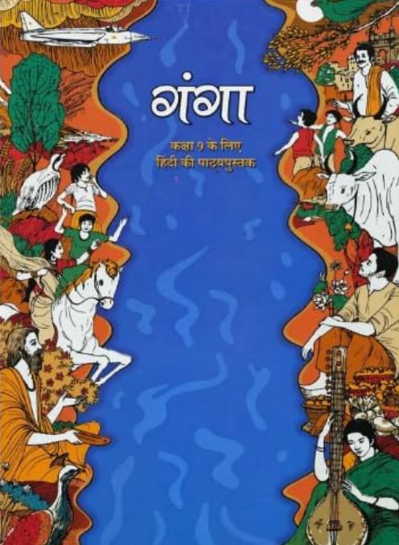

CLASS-9 हिंदी
NCERT SOLUTIONS

कक्षा 9 हिंदी — गंगा
“गंगा” कक्षा 9 के विद्यार्थियों के लिए हिंदी की पाठ्यपुस्तक है। यह पुस्तक विद्यार्थियों को हिंदी भाषा और साहित्य की विविध विधाओं से परिचित कराने के साथ-साथ उनके पठन-बोध, चिंतन, कल्पनाशक्ति और अभिव्यक्ति कौशल को विकसित करने का अवसर प्रदान करती है।
पुस्तक में साहित्यिक रचनाओं के माध्यम से जीवन, समाज, प्रकृति, मानवीय संवेदनाओं, संस्कृति और मूल्यों से जुड़े विभिन्न विषयों को प्रस्तुत किया गया है। पाठों को इस प्रकार रखा गया है कि विद्यार्थी केवल रचनाओं का अध्ययन न करें, बल्कि उनके विचारों, भावों और संदेशों को समझते हुए उन्हें अपने जीवन और आसपास की दुनिया से जोड़ सकें।
पुस्तक की प्रमुख विशेषताएँ
- कक्षा 9 के विद्यार्थियों के लिए हिंदी भाषा और साहित्य की पाठ्यपुस्तक।
- विभिन्न साहित्यिक विधाओं और विषयों के माध्यम से भाषा-अधिगम।
- पठन-बोध और साहित्यिक समझ को विकसित करने पर जोर।
- विद्यार्थियों की मौखिक एवं लिखित अभिव्यक्ति को बेहतर बनाने में सहायक।
- कल्पनाशक्ति, रचनात्मकता और आलोचनात्मक चिंतन को प्रोत्साहित करती है।
- प्रकृति, समाज, संस्कृति और मानवीय संबंधों से जुड़े विषयों का समावेश।
- साहित्य के माध्यम से जीवन-मूल्यों और संवेदनशीलता का विकास।
- विद्यार्थियों को अपने विचारों और अनुभवों को स्वतंत्र रूप से व्यक्त करने के अवसर।
- गतिविधि एवं प्रश्न-आधारित सीखने को प्रोत्साहन।
पाठ्य-संरचना
गंगा में विभिन्न प्रकार की साहित्यिक रचनाओं के माध्यम से भाषा और साहित्य का अध्ययन कराया जाता है। प्रत्येक पाठ विद्यार्थियों को नए शब्दों, विचारों, भावों और जीवन-अनुभवों से परिचित कराता है।
| क्रम | पाठ / रचना | साहित्यिक विधा |
|---|---|---|
| 1 | गद्य एवं पद्य रचनाएँ | विविध साहित्यिक विधाएँ |
| 2 | काव्य रचनाएँ | कविता |
| 3 | कहानी एवं गद्य रचनाएँ | कहानी / गद्य |
| 4 | विचारपरक रचनाएँ | निबंध / विचारात्मक गद्य |
विद्यार्थियों में विकसित होने वाले कौशल
- पठन एवं पठन-बोध
- शब्दावली और भाषा-ज्ञान
- साहित्यिक रचनाओं की समझ
- भाव एवं विचारों की व्याख्या
- मौखिक एवं लिखित अभिव्यक्ति
- रचनात्मक एवं आलोचनात्मक चिंतन
- कल्पनाशक्ति और संवेदनशीलता
- विचारों को तार्किक एवं प्रभावी ढंग से प्रस्तुत करने की क्षमता
गंगा क्यों महत्वपूर्ण है?
गंगा विद्यार्थियों को हिंदी भाषा और साहित्य के माध्यम से जीवन और समाज को समझने का अवसर देती है। साहित्यिक रचनाओं के अध्ययन से विद्यार्थी भाषा की अभिव्यक्ति-शक्ति, भावों की गहराई और विभिन्न दृष्टिकोणों को समझना सीखते हैं। यह पुस्तक भाषा-दक्षता के साथ-साथ संवेदनशीलता, रचनात्मक सोच और स्वतंत्र चिंतन को विकसित करने में सहायक है।
पुस्तक विवरण
| पुस्तक का नाम | गंगा (Ganga) |
|---|---|
| विषय | हिंदी |
| कक्षा | 9 |
| प्रकाशक | राष्ट्रीय शैक्षिक अनुसंधान और प्रशिक्षण परिषद (NCERT) |
| शैक्षणिक सत्र | 2026–27 |
अक्सर पूछे जाने वाले प्रश्न — कक्षा 9 हिंदी गंगा
1. कक्षा 9 हिंदी की पुस्तक का नाम क्या है?
कक्षा 9 हिंदी की पाठ्यपुस्तक का नाम गंगा है।
2. गंगा पुस्तक किस कक्षा के विद्यार्थियों के लिए है?
गंगा कक्षा 9 के विद्यार्थियों के लिए हिंदी भाषा और साहित्य की पाठ्यपुस्तक है।
3. गंगा पुस्तक किस संस्था द्वारा प्रकाशित की गई है?
यह पुस्तक राष्ट्रीय शैक्षिक अनुसंधान और प्रशिक्षण परिषद (NCERT) द्वारा प्रकाशित की गई है।
4. गंगा पुस्तक का मुख्य उद्देश्य क्या है?
पुस्तक का उद्देश्य विद्यार्थियों में भाषा-बोध, साहित्यिक समझ, पठन, लेखन, चिंतन और प्रभावी अभिव्यक्ति जैसे कौशल विकसित करना है।
5. गंगा में किस प्रकार की साहित्यिक सामग्री शामिल है?
पुस्तक में विभिन्न प्रकार की गद्य और पद्य रचनाओं के माध्यम से विद्यार्थियों को हिंदी साहित्य की विविधता से परिचित कराया जाता है।
6. क्या गंगा पुस्तक में कविताएँ शामिल हैं?
हाँ। पुस्तक में काव्य रचनाओं के माध्यम से विद्यार्थियों को भाव, कल्पना, भाषा-सौंदर्य और काव्यात्मक अभिव्यक्ति को समझने का अवसर मिलता है।
7. क्या गंगा में गद्य रचनाएँ भी हैं?
हाँ। गद्य रचनाएँ विद्यार्थियों को विभिन्न विषयों, जीवन-अनुभवों और विचारों को समझने तथा उनका विश्लेषण करने में सहायता करती हैं।
8. गंगा विद्यार्थियों की भाषा-दक्षता कैसे बढ़ाती है?
पुस्तक के पाठ विद्यार्थियों की शब्दावली, पठन-बोध, वाक्य-प्रयोग, लेखन और मौखिक अभिव्यक्ति को विकसित करने में सहायक हैं।
9. क्या गंगा में जीवन-मूल्यों से संबंधित विषय हैं?
हाँ। साहित्यिक रचनाओं के माध्यम से विद्यार्थियों को मानवीय संवेदनाओं, सामाजिक जीवन, प्रकृति, संस्कृति और जीवन-मूल्यों से जोड़ने का प्रयास किया गया है।
10. क्या गंगा विद्यार्थियों में रचनात्मकता विकसित करती है?
हाँ। पाठों से जुड़े प्रश्न और गतिविधियाँ विद्यार्थियों को कल्पना करने, विचार करने और अपने विचारों को रचनात्मक रूप से व्यक्त करने के अवसर देती हैं।
11. गंगा में साहित्य पढ़ने से विद्यार्थियों को क्या लाभ होता है?
साहित्य के अध्ययन से विद्यार्थियों में संवेदनशीलता, कल्पनाशक्ति, भाषा-बोध, विचार-क्षमता और विभिन्न दृष्टिकोणों को समझने की क्षमता विकसित होती है।
12. क्या गंगा परीक्षा की तैयारी के लिए महत्वपूर्ण है?
हाँ। पाठ्यपुस्तक के पाठों की अच्छी समझ कक्षा 9 की हिंदी की परीक्षा और पाठ्यक्रम आधारित तैयारी के लिए महत्वपूर्ण है।
13. क्या गंगा में कठिन शब्दों और भाषा-अभ्यास पर ध्यान दिया गया है?
हाँ। पाठों के अध्ययन से विद्यार्थियों को नए शब्दों, भाषा-प्रयोगों और संदर्भानुसार अर्थ समझने का अवसर मिलता है।
14. गंगा विद्यार्थियों में कौन-कौन से प्रमुख कौशल विकसित करती है?
यह पुस्तक पठन-बोध, लेखन, मौखिक अभिव्यक्ति, आलोचनात्मक चिंतन, रचनात्मक सोच और साहित्यिक विश्लेषण जैसे कौशल विकसित करने में सहायक है।
15. कक्षा 9 के विद्यार्थियों के लिए गंगा का अध्ययन क्यों महत्वपूर्ण है?
गंगा विद्यार्थियों को हिंदी भाषा और साहित्य की बेहतर समझ प्रदान करती है तथा उनकी भाषा-दक्षता, संवेदनशीलता, चिंतन और प्रभावी अभिव्यक्ति को विकसित करने में महत्वपूर्ण भूमिका निभाती है।